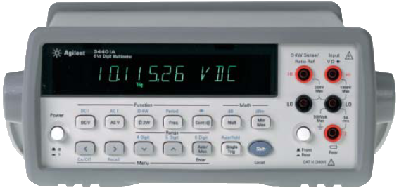
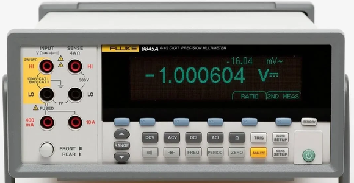
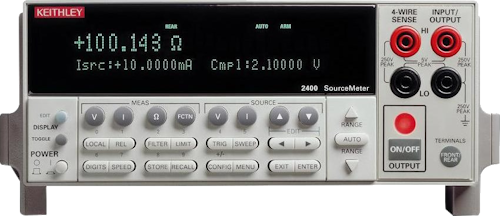
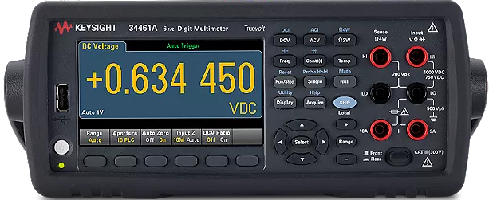

Digital Multimeter (DMM)#
Using InstroDMM for SCPI-based digital multimeters
InstroDMM provides a unified interface for digital multimeters. This class is initialized with a vendor-specific driver (Agilent34401A, Keysight34461A, Keithley2400, …), and provides the vendor-agnostic API (set_measurement_function, read, set_range, …).
Creating an InstroDMM#
from instro.dmm.drivers import Agilent34401A
from instro.dmm import InstroDMM
dmm = InstroDMM(
name="myDMM",
driver=Agilent34401A("ASRL3::INSTR"),
)
Supported Vendors#




Virtual: no hardware or server; readings simulated in-process (
VirtualDMM, see Virtual instruments)Simulated: no hardware required; pairs with the bundled DMM simulator (
SimulatedDMM)
If your vendor or model is not listed, see Custom Driver Development, or open a Driver Request issue on GitHub.
Example#
More examples found in Examples
Details#
The following presents details about the InstroDMM. Specific driver details can be found on their pages.
Driver Composition#
An InstroDMM is built from a concrete driver:
InstroDMM("name", driver=Agilent34401A("ASRL3::INSTR"))
Agilent34401Aowns the connection setup and vendor-specific command mapping.InstroDMMowns the category-level workflow: measurements, commands, publishers, the background daemon.
Lifecycle#
The typical InstroDMM workflow:
Construct: instantiate the vendor driver and pass it to
InstroDMM.open(): establishes the VISA connection.Configure measurement: set the measurement function (e.g. DC voltage), and optionally resolution, aperture, and range.
read(): trigger a measurement and get the value. Theread_<function>()shorthands (e.g.read_dc_voltage()) fold steps 3 and 4 into one call.close(): disconnect from hardware.
Optionally, you can use background fetching via start() / stop(), but it is an atypical use case for a DMM. See Two ways to get data for more.
Measurement Functions#
InstroDMM supports these measurement functions (availability depends on the driver):
DC Voltage
AC Voltage
DC Current
AC Current
2-Wire Resistance
4-Wire Resistance
You must call set_measurement_function() before configuring resolution, aperture, range, or calling read().
Single-call reads#
When you only need a value and don’t need to tune resolution, aperture, or range, use the per-function shorthand instead of the two-step sequence:
voltage = dmm.read_dc_voltage() # selects DC voltage if needed, then reads
One exists per measurement function: read_dc_voltage(), read_ac_voltage(), read_dc_current(), read_ac_current(), read_resistance() (2-wire), and read_four_wire_resistance().
Each selects the function only when it isn’t already active, so repeated calls in the same function cost a single measurement and publish set_measurement_function.cmd once. They publish exactly the same channels as set_measurement_function() + read().
Init from a Config File#
InstroDMM can also be constructed directly from a JSON config file, which removes the need to write any Python setup code:
from instro.dmm import InstroDMM
dmm = InstroDMM(config="bench_dmm.json")
Where bench_dmm.json contains:
{
"version": 1,
"instrument": "InstroDMM",
"device": {
"name": "bench_dmm",
"description": "Bench multimeter",
"manufacturer": "Keysight",
"model": "34461A"
},
"driver": {
"name": "Keysight34461A",
"connection_type": "visa",
"visa": {
"visa_resource": "USB0::0x2A8D::0x1301::MY12345678::INSTR"
}
},
"measurement": {
"function": "DC_VOLTAGE",
"aperture_nplc": 10,
"range": 10.0
},
"timing": {
"poll_interval": 1.0
},
"publishers": [
{
"type": "NominalCorePublisher",
"dataset_rid": "<dataset_rid>"
}
]
}
To try a config with no hardware, use the virtual driver: "driver": {"connection_type": "virtual", "name": "VirtualDMM"}.
See Config Files for the full field reference.
Custom Driver Development#
For more information on writing a custom driver, see Custom Driver Development.